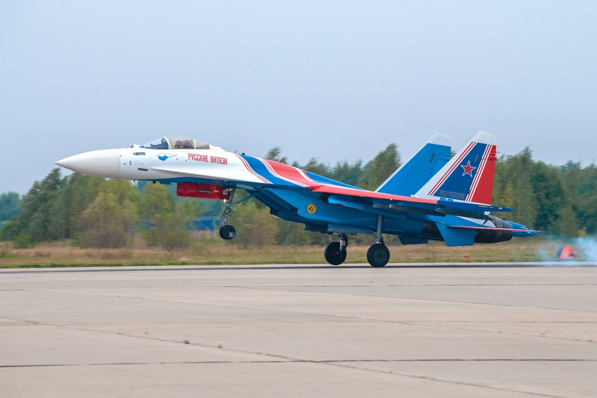
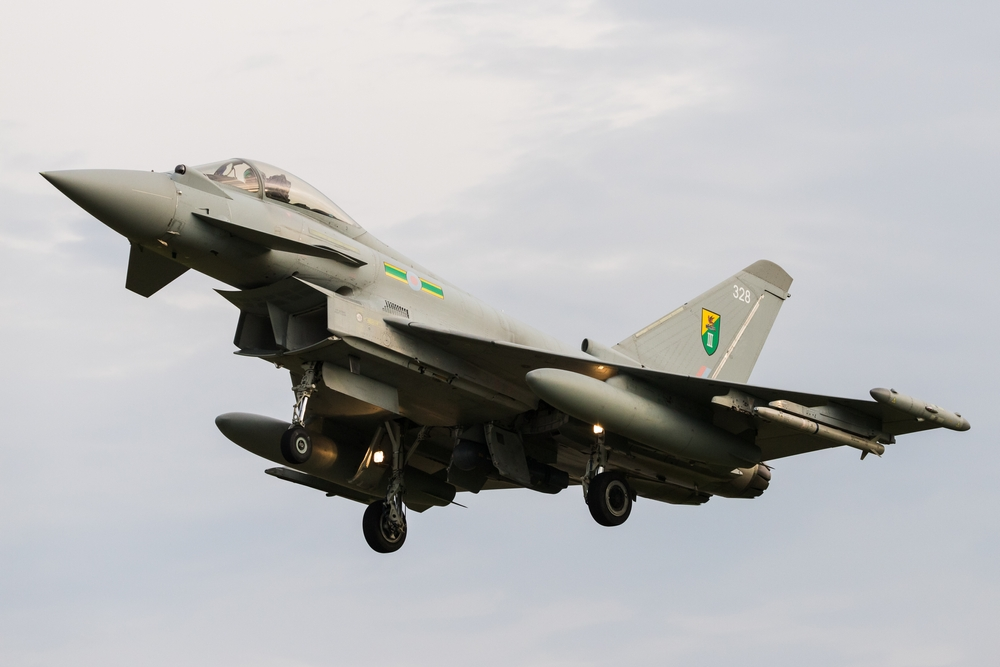
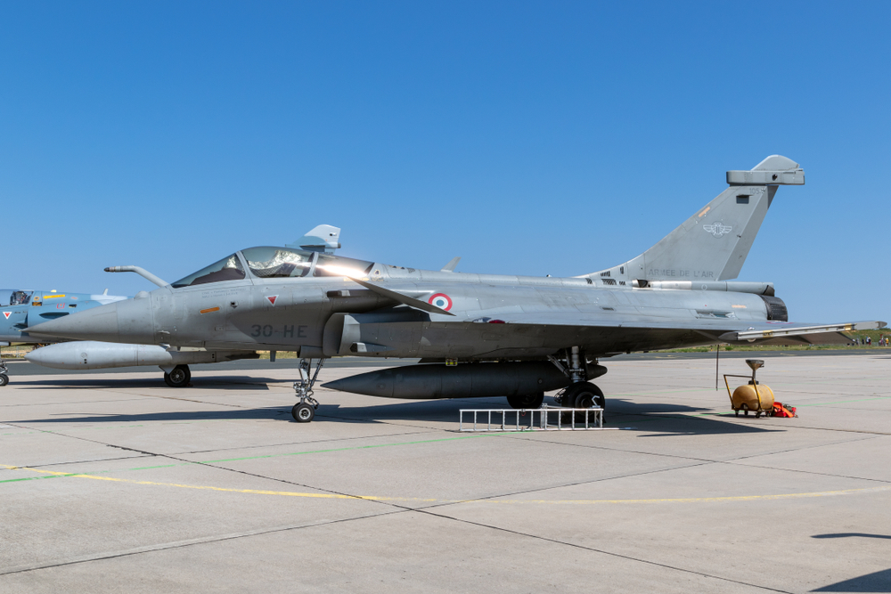
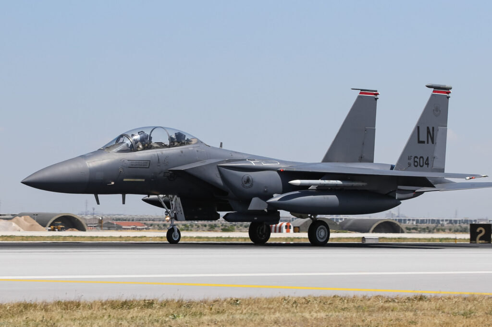
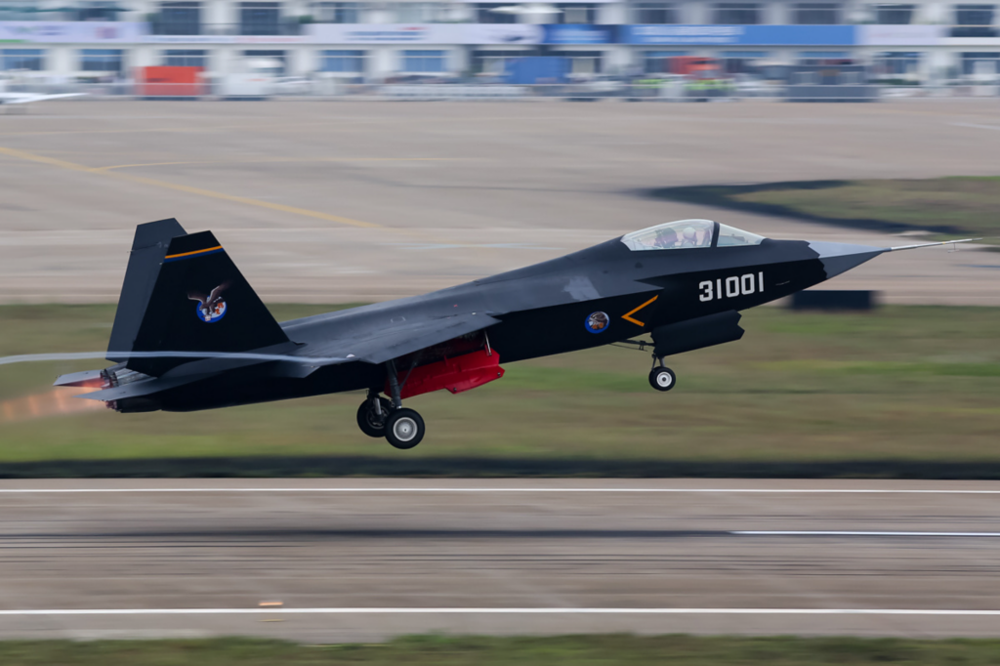
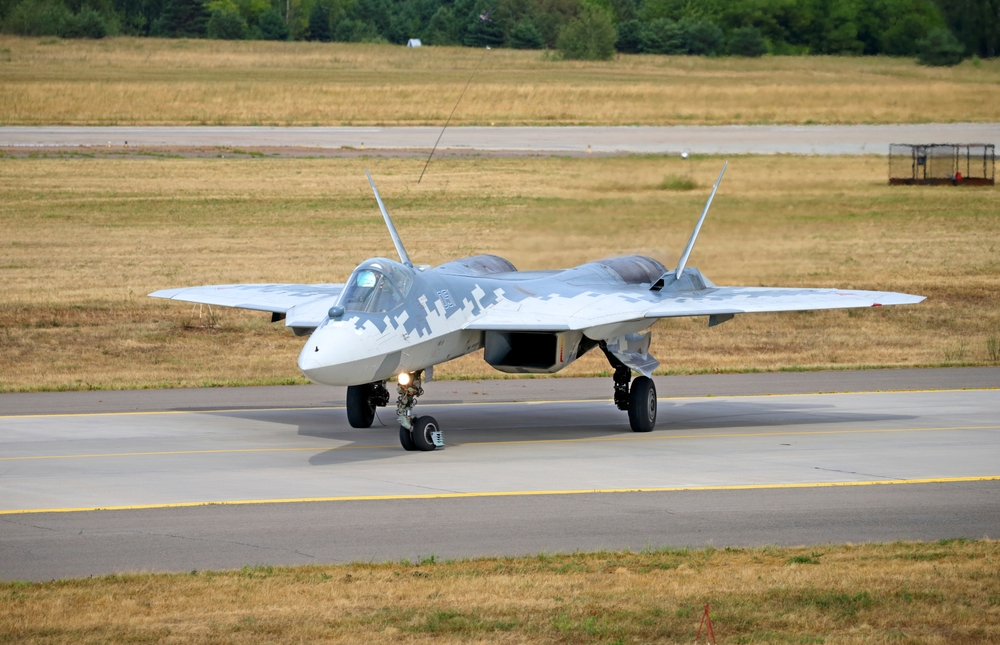
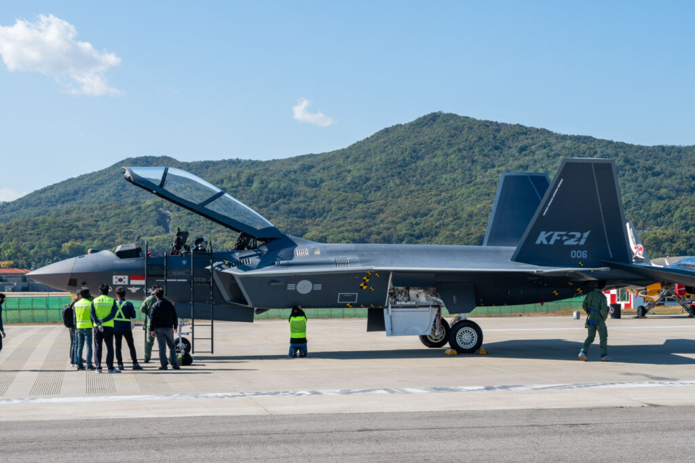
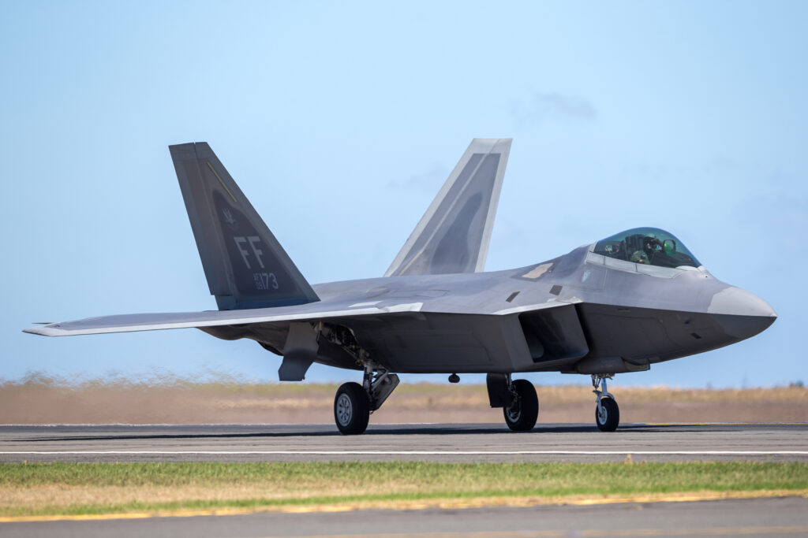
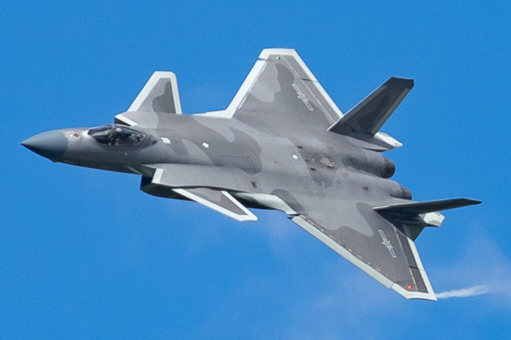
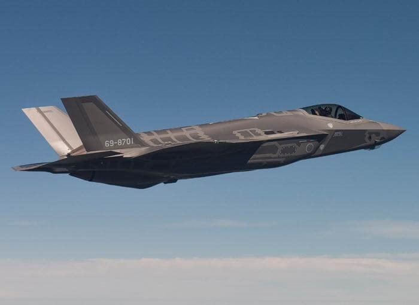

Top 10 best fighter jets in the world in 2024
Many countries use older and cheaper models of fighter jets. However, the leading armies always try to have an edge over their adversaries and procure state-of-the-art equipment.
The more advanced the jet is, the more effective it can be at performing its role. So, the latest technologies are often used on fighter aircraft. Powerful engines, complex weapons systems, and sophisticated radars allow these machines to be truly multi-role.
Some of these aircraft employ thrust vectoring engine nozzles for additional maneuverability, while others make use of stealth designs to reduce their radar and heat signature. The latest and most advanced fighter jets feature complex computers and communication links to process and share data.
Without further ado, here are Top 10 best fighter jets in the world in 2024!
10. Sukhoi Su-35S
The Russian Sukhoi Su-30, Su-35, and Su-37, along with the Chinese Shenyang J-16, are all based on the celebrated Su-27 platform, with various upgrades offering 4.5 generation capabilities. Each jet has a number of variants and modifications.
But the Su-35S could be considered the ultimate version of them all. It features the latest electronics systems to be produced by Russia, as well as numerous improvements to the fuselage. Its signature characteristic is the thrust-vectoring engine nozzles, which can turn in any direction, making the aircraft extremely maneuverable, so much so that it does not even require canards, a feature that became a staple on earlier Su-30 and Su-35 variants.
9. Eurofighter Typhoon
As its name implies, the Eurofighter Typhoon was designed to be a joint European fighter jet. It boasts an impressive performance and advanced technology. However, it has received a lot of attention from outside Europe and is now used by some of the strongest air forces across the continent and in the Middle East, including the United Kingdom, Germany, Italy, Qatar, and Saudi Arabia.
And there are good reasons for that. The Typhoon is one of the most advanced and powerful 4th generation jets, and its latest variant, the Tranche 3, employs the newest technologies. An even more advanced Tranche 4 was introduced in 2020, improving the electronics and weapons systems featured in Tranche 3.
8. Dassault Rafale
The Dassault Rafale and the Eurofighter Typhoon are quite similar, not least because they began development as one aircraft. However, in the mid-1980s France decided to divide the program and create a separate fighter for its own needs.
Unlike the Typhoon, a variant of the Rafale exists that can land on an aircraft carrier. It is also certified to carry air-launched nuclear weapons.
France also upgrades its Rafale constantly. The F3 is the latest variant and includes the latest weapons systems and sensors.
The Rafale 4 is currently under development and will include further improvements to its radar and avionics systems. France, the United Arab Emirates, India, and a host of other customers will begin to receive delivery of this variant in the near future, while many older variants will be upgraded.
7. Boeing F-15EX Eagle II
The Boeing F-15 Eagle was one of the first 4th generation fighter jets. Sometimes it is hard to believe that this jet celebrated its 52nd birthday in 2024.
However, it still remains a potent war machine. It is the only fighter jet in the world to score more than 100 air-to-air kills and experience no air-to-air losses. It has also been continuously upgraded, with its new variants featuring the most advanced technologies.
The F-15EX Eagle II, developed by Boeing, is the latest variant of the jet. The aircraft features a new radar, updated avionics, and advanced weapons systems, as well as countless other improvements, ensuring its relevance in contemporary aerial warfare.
6. Shenyang FC-31 Gyrfalcon
China's Shenyang FC-31 Gyrfalcon project initially introduced over a decade ago, is now close to fruition. Although the FC-31 is yet to be unveiled, the jet, under different designations, is close to becoming China's new carrier-based jet.
Although exact capabilities remain largely classified, recent images show the FC-31 with redesigned engine housing, a new canopy, and many other intriguing upgrades.
5. Sukhoi Su-57
The Sukhoi Su-57 Felon is Russia's first stealth aircraft. However, its development was slowed due to numerous problems and delays and, although initially planned to become operational years ago, it only exists in small quantities.
In the coming years, the Su-57 is poised to receive a new, more powerful engine to further enhance its performance and various other upgrades. It is a heavy fighter with low-speed maneuverability, as well as stealth characteristics and advanced radar systems.
4. KAI KF-21 Boramae
The KAI KF-21 Boramae, produced by South Korea in partnership with Indonesia, represents a significant leap in the Korean aerospace industry. This jet incorporates stealth features, an advanced AESA radar system, and some technologies based on the F-35, putting it somewhere between a 4.5 and 5th-generation fighter.
The first KF-21 conducted its maiden flight in July 2022, and several more prototypes are currently in production and undergoing testing at KAI. The company aims to start delivering these jets to the military in 2026.
The Boramae is also set to receive additional improvements in the near future. Further variants, with internal weapons bays and improved sensors to enhance its stealth capability, along with an integrated electronic warfare system to boost its survivability in combat, and make it a true 5th-generation fighter jet.
3. Lockheed Martin F-22 Raptor
The F-22 is the first-ever 5th generation fighter jet to enter service, and the first fighter to include stealth features. Its thrust-vectoring engines and advanced weapons systems give it an edge at close-range dogfighting, and it also has powerful sensors for beyond-visual range.
The United States Air Force (USAF) is the only service to operate the F-22, as it was deemed too advanced to be handed over to another country. However, the F-22 was regularly deployed abroad where it has been used in multiple combat missions, proving its worth.
The USAF is also continuously upgrading its Raptors, which means that, despite being first designed more than two decades ago, they remain some of the most advanced aircraft in the world.
2. Chengdu J-20 Mighty Dragon
China's first 5th generation fighter jet introduced in 2017, the J-20 Mighty Dragon, is a heavy, powerful fighter designed to rival the F-22 and the Su-57. It is a step forward in Chinese fighter jet development, bringing advanced avionics, and superior performance to the People's Liberation Army Air Force (PLAAF). It might not be as maneuverable as its counterparts without the thrust-vectored engine exhausts, but the stealthy design of the Chengdu J-20 is still incredibly advanced.
While the exact characteristics of this aircraft are classified, ongoing enhancements ensure that it continues to pose a threat in aerial warfare. New variants are currently in development, including a two-seater jet intended to control drones. A new, more powerful engine is also currently being tested on this aircraft. China remains tight-lipped about the J-20's exact capabilities.
1. Lockheed Martin F-35 Lightning II
The Lockheed Martin F-35 Lightning II is the pinnacle of the United States' fifth-generation fighter development. Ever since entering production in 2006, the F-35 has embodied the latest in combat aircraft development. It boasts unmatched stealth features, sensor fusion, the world's most powerful fighter engine, data networking capabilities, and the most advanced radar. Its pilots even use a special augmented reality helmet that offers them unprecedented levels of situational awareness.
This jet is said to take its all-aspect stealth and sensor fusion to the max, making it almost unbeatable in beyond-visual-range combat. Furthermore, it can hold its own in good old dogfights too. In 2017, during the model's first Red Flag exercise, the F-35 scored a 20:1 kill ratio, meaning that it won 20 engagements for each one it lost. Such an advantage is mostly the result of the F-35's unprecedented situational awareness. The aircraft can track and attack targets in all directions, so, getting on the F-35's tail does not mean you are safe from its missiles.
The F-35 also has three distinct variants: the conventional takeoff and landing F-35A, which works as your regular fighter jet; the F-35B, which has vertical take-off and landing ability; and the carrier variant F-35C, designed to land on aircraft carriers.
Initially, this jet experienced several developmental problems and, despite being intended as a cheap alternative to the F-22, quickly became the most expensive weapons system in the world. However, with the cost of the new F-35s dropping and the deficiencies being ironed out, more and more countries are ordering F-35s, making it an export success.
